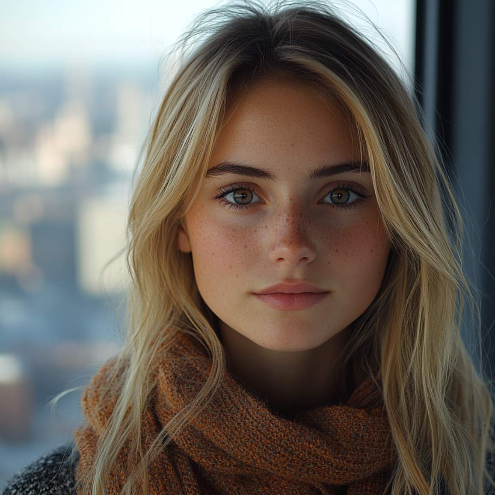

Aino Salonen
21.08.2024

Päivämäärä: 3. huhtikuuta 2024
Diagnoosi: Neurofibromatoosi tyyppi 1 (NF1), lievä perinnöllinen muoto
Kuvaus: Rutiinikäynnillä havaitaan vaaleanruskeita ihomuutoksia ja pieniä kyhmyjä ihon alla. Diagnosoitiin perinnöllisen NF1:n lievä muoto. Välitöntä hoitoa ei tarvita, mutta tulevien oireiden varalta suositellaan erityistä seurantaa. Suositellaan rutiinitarkastuksia mahdollisten muutosten seuraamiseksi.
Päivämäärä: 18. lokakuuta 2021
Diagnoosi: Nilkan nyrjähdys
Kuvaus: Potilas hakeutuu hoitoon nilkan turvotuksen ja kivun vuoksi, joka johtui jalkapallotreeneissä tapahtuneesta nyrjähdyksestä. Diagnosoitiin nyrjähdys. Suositellaan lepoa, kylmähoitoa ja kompressiota.
Päivämäärä: 5. toukokuuta 2020
Diagnoosi: Osgood-Schlatterin tauti
Kuvaus: Potilas kokee kipua ja turvotusta polvessa fyysisen aktiivisuuden jälkeen. Diagnosoitiin Osgood-Schlatterin tauti. Suositellaan lepoa ja fysioterapiaa oireiden lievittämiseksi.